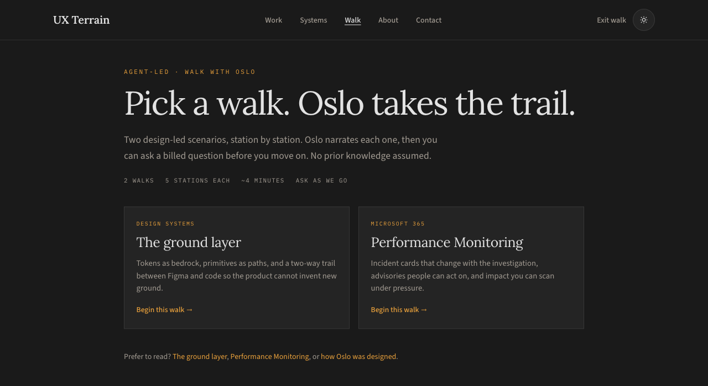
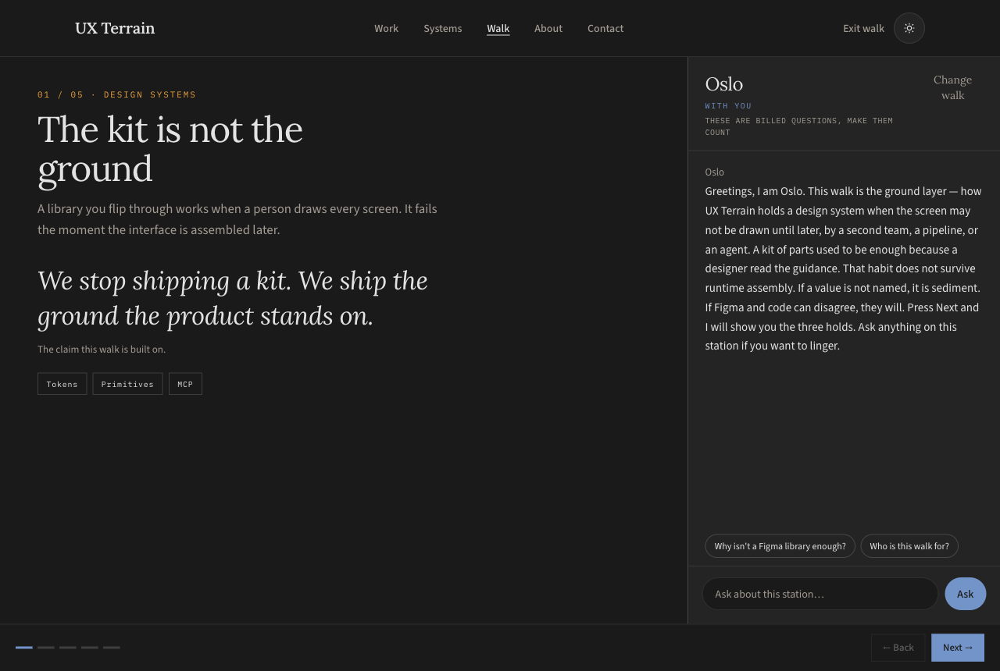

Oslo · Portfolio agent
Explore the work. Ask about the decisions.
Oslo is the AI guide inside UX Terrain. Visitors can ask about a case study, follow references to the evidence, or choose a short walkthrough. The focus is a conversation that stays grounded in the work and gives the visitor control.
Help visitors ask about the work
A case study can explain a project without answering every question a visitor brings to it. Oslo gives hiring managers, design leaders, and peers a way to ask about the decisions, inspect the supporting material, and choose where to go next. The design challenge is making that conversation useful without turning missing information into a convincing story.

Two ways into the same material
Ask Oslo starts from the visitor’s question. It uses the current case study as context and offers questions about decisions, tradeoffs, and outcomes. Walk with Oslo starts from an authored sequence: one visual, one explanation, two questions, then a choice to continue.
- 01
Ask
Start with a question about the case you are reading.
- 02
Inspect
Follow an evidence link to the supporting section.
- 03
Walk
Choose a guided route when you want an introduction.
- 04
Continue
The visitor decides when to move to another station.
Make the status of an answer visible
The current answer design separates three kinds of statement: what the case documents, an interpretation of a design choice, and information the case does not provide. Evidence references open named sections of the portfolio. The server resolves those links from known source IDs, keeping the destinations under the site’s control.
This distinction matters most for hard questions. A tradeoff can be a useful interpretation without being the designer’s documented rationale. A missing measurement should remain a gap rather than become an invented result.
Keep the conversation in context
The panel identifies the current project. A walk sends a project and station identifier, which the server resolves to the authored station content. Temporary follow-up context supports questions such as “Why that approach?” without treating earlier answers as evidence. That context is bounded to three exchanges per project or station on the current page and clears on reload.
Design the pacing of a walk
The two Oslo walks each have five authored stations. A station pairs its visual with a short script and two suggested questions. Back, Next, and station selection remain visitor controls; an answer does not automatically advance the walk. This keeps the introduction predictable while leaving room to question a decision.

A useful failure changed the answer design
In an early test, Oslo suggested that incident cards sacrificed historical context, even though the Performance Monitoring case includes historic timelines. The response had references, but its interpretation still overreached. That exposed a limitation: a valid source link does not prove that a conclusion follows from it.
The current version adds an evidence-review pass before displaying an answer and a source-linked correction for that known mistake. These are improvements to the procedure, not proof that every generated answer is correct. The content still needs evaluation across a wider range of questions.
How the current implementation works
The sidebar and guided walk share a chat endpoint. For current Oslo answers, the server selects published case-study evidence and trusted station content, prepares a draft, and requests an evidence review. It then validates the returned source IDs and sends a structured answer for the interface to display.
The current Oslo response appears after that review rather than streaming token by token. A waiting indicator keeps the request visible. While it is pending, the question controls are disabled. The API key stays on the server. Eda and the older text-response format retain their separate response behavior.
What I designed
The product concept and two entry points; the authored walkthrough structure; the prompts and scope; project and station context; the answer categories and evidence navigation; and the interaction states for waiting, follow-ups, and errors. The work connects the written guidance to what a visitor can actually see and control.
Keep evaluating the conversation
Automated checks cover source destinations, invalid context, unsupported reference IDs, and response compatibility. Conversation checks also need human review: did the answer address the question, use the whole case, distinguish interpretation from fact, and acknowledge what was missing? Those are the next quality questions for Oslo.
The product goal is a portfolio that helps people understand and question the work. The case studies remain the evidence; the agent helps visitors find their way through them.